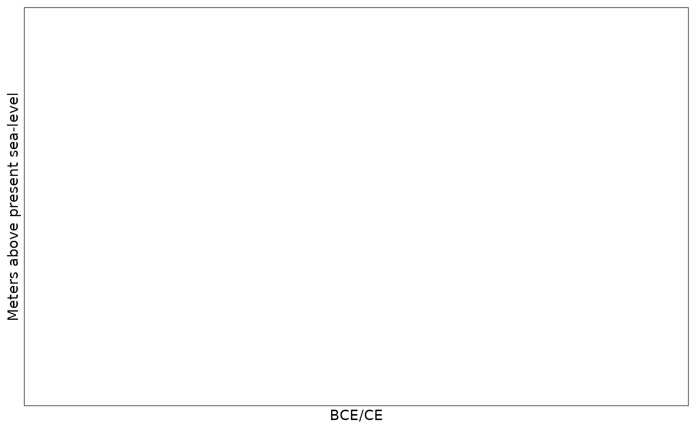

Function for plotting shoreline displacement curves. Calling to plot without providing a target curve will display the four underlying geologically derived displacement curves.
displacement_plot(
target_curve = NA,
displacement_curves = c("Horten", "Porsgrunn", "Tvedestrand", "Arendal"),
target_name = "Target curve",
target_line = "solid",
target_col = "red",
target_alpha = 1,
displacement_line = c(Horten = "solid", Porsgrunn = "solid", Tvedestrand = "solid",
Arendal = "solid"),
displacement_col = c(Horten = "darkorange", Porsgrunn = "darkgreen", Tvedestrand =
"blue", Arendal = "black"),
displacement_alpha = 1,
greyscale = FALSE
)Data frame holding a shoreline displacement curve.
Character vector specifying which geologically
informed displacement curves should be plotted. Accepted values are
c("Horten", "Porsgrunn", "Tvedestrand", "Arendal"). All are included by
default.
Character value specifying the name that is given to the
target curve, if provided. Defaults to "Target curve".
Character value specifying the line type that is used for
the target curve, if this is provided. Defaults to "solid".
Character value specifying the colour that is used for the
target curve, if this is provided. Defaults to "red".
Numerical value specifying the alpha value that is used
for the target curve, if this is provided. Defaults to 1.
Character vector specifying the line types that are
used for the geological displacement curves to be plotted. Defaults to
c("Horten" = "solid", "Porsgrunn" = "solid", "Tvedestrand" = "solid", "Arendal" = "solid").
Character vector specifying the colours that are
used for the geological displacement curves to be plotted. Defaults to
c("Horten" = "darkorange", "Porsgrunn" = "darkgreen", "Tvedestrand" = "blue", "Arendal" = "black").
Numerical value specifying the alpha value that are used for all of the geological displacement curves to be plotted. Defaults to 1.
Logical value indicating whether the plot should be in
greyscale or not. Defaults to FALSE.
A plot displaying the underlying shoreline displacement curves and, if provided, a target curve.
# Empty plot for speed
displacement_plot(displacement_curves = "")
#> Warning: No shared levels found between `names(values)` of the manual scale and the
#> data's colour values.
#> Warning: No shared levels found between `names(values)` of the manual scale and the
#> data's alpha values.
#> Warning: No shared levels found between `names(values)` of the manual scale and the
#> data's linetype values.
